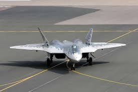

SU-57

| Length | 20.1 meters (65.9 feet) |
| Width | 4.74 meters (15.6 feet) |
| Speed | ~2,135 km/h or 1,327 mph |
| Radar Range | X-band radar in the nose; L-band arrays in wing leading edges |
| Combat Radius | 1,500 km (932 miles) with internal fuel |
| Weapons |
Air-to-Air: R-77M, R-73 Air-to-Ground: Kh-38M, Kh-58UShK, KAB-series bombs Hardpoints: 4,000–6,000 kg (external) Cannon: 30mm GSh-30-1 internal |
| Made In | Russia |

Thruster
The Su-57 is powered by twin Saturn AL-41F1 engines with 3D thrust vectoring and afterburners, producing ~142 kN of thrust each. These engines offer high maneuverability and stealth-enhancing features in future versions.
Air Brakes
Integrated airbrakes in the wings and fuselage provide rapid deceleration while preserving stealth. They are flush with the surface and coordinated with flight controls for efficient aerodynamic braking.